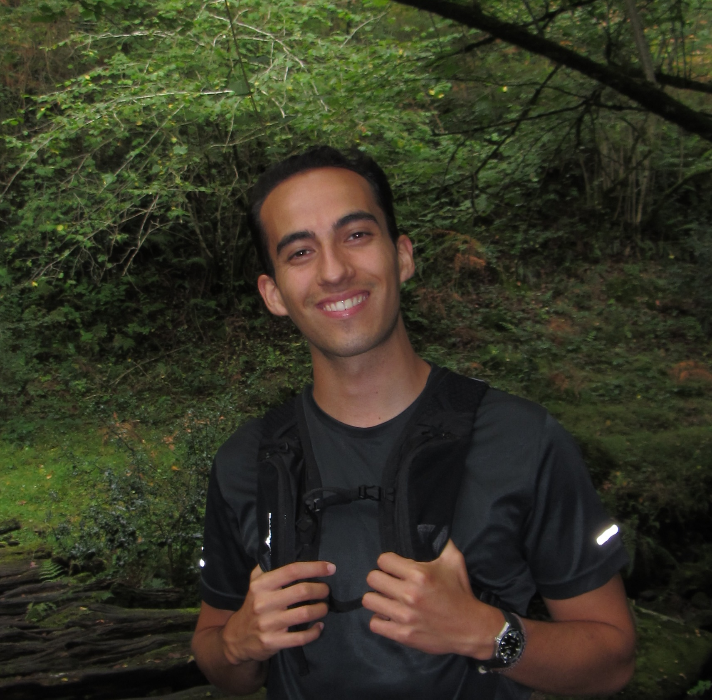

Mathematics, physics, and computation. Somewhere in between abstraction and application.
I am currently pursuing an MSc in Mathematics at Université Paris Sciences et Lettres in Paris, supported by the FSMP Master Scholarship. Before moving to Paris, I completed a double bachelor's degree in Mathematics and Physics at the University of Barcelona. Needless to say, my interests lie in the intersection of these two sciences.
I am particularly drawn to the interplay between mathematics and physics: the geometric and mathematical structures that underlie physical theories, as well as the physical intuition that often inspires and shapes new mathematics. At the same time, I enjoy seeing how abstract ideas can eventually take the form of concrete computational tools. This is part of what I find so appealing about my current work as a Simulation Modeling Engineer at Westinghouse Nuclear, where I contribute to the development of software for advanced nuclear simulations.
My first step into research happened during the summer of 2023 at the Centre de Recerca Matemàtica (CRM), where I worked on transcendental dynamics within the complex exponential family. It was my first real taste of mathematical research, and it did not disappoint.
In fact, I enjoyed the experience so much that I soon found myself looking for something new. This time, however, I wanted something more interdisciplinary. That curiosity led me to the Institute for Research in Biomedicine, where I worked in the Molecular Modelling and Bioinformatics group. There I had the chance to apply tools from physics and mathematics to problems in biology, studying how DNA flexibility changes under damage through coarse-grained simulations.
More recently, I spent some time at the Barcelona Supercomputing Center, working with the Quantic group on quantum computing. Our work explored measurement-efficient techniques based on classical shadows and observable grouping, an area that I initially approached out of curiosity and ended up finding quite fascinating.
Broadly speaking, my interests lie in what is often called mathematical physics. Many times, studying a physical system from the abstract point of view offered by mathematics can lead to progress that would otherwise require formidable efforts to achieve. However, this is a two-way street, since physics has inspired entire areas of mathematics. Indeed, calculus is the classical example, but more modern theories such as quantum field theory continue to serve as a fertile playground for new mathematical ideas. If you are curious about this interplay, I would recommend this Quanta Magazine article.
Outside the realm of science, I am absorbed by literature—especially ancient Greek and Roman works—although I am always happy to discover more recent authors as well.
BSc in Mathematics and BSc in Physics
Summer Research Intern
Research Intern
Visiting Student
Simulation Modeling Engineer
MSc in Mathematics